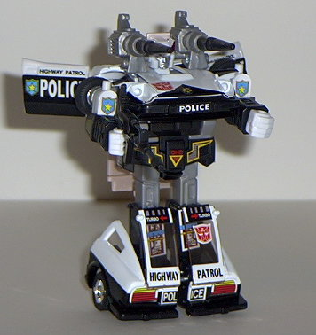
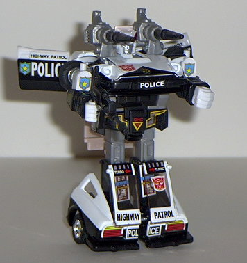

(NOTE: Because this is a repaint, this is not a full-blown review. This mainly covers any changes made to the mold and the color scheme, and merely compares it to Silverstreak. For a review on the mold itself, read the review of Silverstreak here .)
Prowl has a small change
from the Silverstreak mold; now he has a police siren, making him a police
sportscar. Yes, I've never seen one, either. Anyways, the color scheme
is typical of that of a police car- white and black, with a bit of red.
This would have been a bit boring, if it wasn't for the fact that Prowl
is LOADED down with stickers. I'm serious, they're everywhere! You'd have
to be blind to not realize that this is a police car! So that extra attention
to all those details is certainly appreciated. However, the color scheme
itself- boring ol' white and black- can be a bit wanting. I like Silverstreak's
silver-and-red color scheme a bit better. Prowl has no mold changes from
Silverstreak excluding the police siren thing, so everything I've said
about Silverstreak mold-wise applies here as well.
Picking whether Prowl
or Silverstreak is better is a tough one. On one hand, Prowl has more stickers,
and a better attention to detail. On the other hand, Silverstreak has a
better overall color scheme. So the grand winner is... neither. And both.
I rate them both exactly the same on my scale. Although I can't really
recommend both unless you're a completist, if you like the design, pick
whichever character you like more.
Review by Beastbot